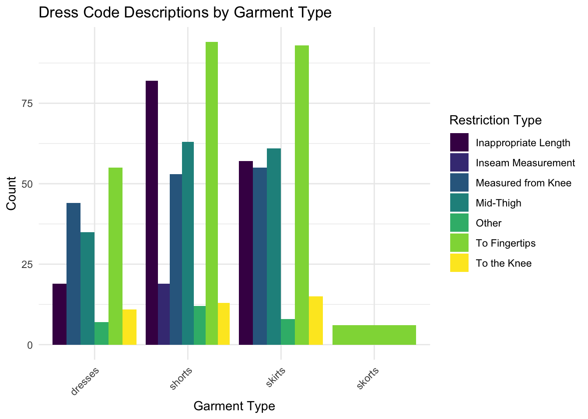
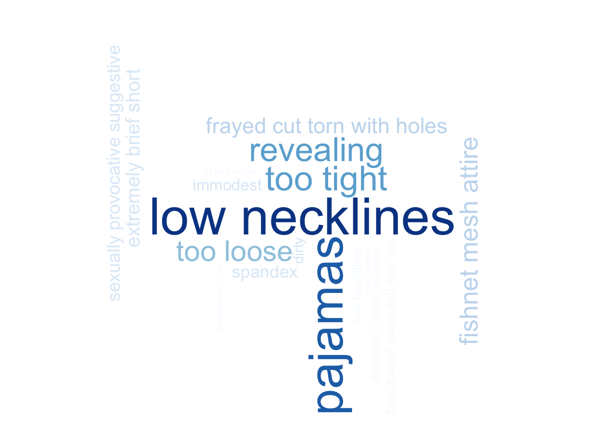

Mini Project 3
This project utilizes data from the GitHub repository “the-pudding/data,” focusing on dress codes across 481 public high schools in the U.S.
Length Restrictions
This visualization categorizes various length restrictions applied to gender-specific clothing items such as dresses, shorts, skirts, and skorts. The bar chart illustrates the frequency of each type of restriction, providing insight into the prevalence of specific dress code standards. The most commonly observed restriction is “to the fingertips,” indicating a widespread adherence to this particular measurement in school dress codes. This analysis sheds light on the uniformity and specificity of length regulations, reflecting broader cultural norms and expectations within educational settings.
States were there is the Most Restrictions
This map displays the distribution of dress code restrictions across various U.S. states, based on a sample of 15,144 entries detailing the strictness of these policies. The visualization merges this data with geographic information to highlight regional trends in dress code enforcement. A color gradient is used to denote the intensity of restrictions per state, offering a visual representation of regional variance in dress code severity. However, the map’s accuracy is somewhat skewed due to a disproportionately large sample of 2,905 entries from Texas, resulting in a darker shade for the state compared to others.
Visualizing Banned School Clothing and Promotional Items

This visualization features two word clouds representing commonly banned items in schools: one for clothing and another for promotional items. The word clouds highlight the frequency of specific prohibitions, with larger text signifying more common bans. This visual representation elucidates the priorities and focus areas within school dress codes.
For clothing, the bans often reflect gendered standards, with frequent mentions of items like “low necklines” and “fishnet,” suggesting a focus on regulating femininity and modesty. The clothing restrictions also include contradictory terms such as “too tight” and “too loose,” highlighting the challenging and sometimes sexist standards students, particularly female students, are expected to navigate.
The promotional items word cloud showcases bans less related to sexuality and more to maintaining a safe and respectful environment, with items like “alcohol,” “drugs,” and “violence” being commonly prohibited. Interestingly, “discriminatory violence” also appears frequently, yet the clothing restrictions still show a disparity in how dress codes impact women and men, raising questions about inherent biases in these policies and whether maintaining these rules serves to reinforce or challenge societal norms regarding gender and propriety.
The Most Commonly Banned Visible Body Parts in Schools
This bar chart details the prevalence of specific body parts banned across the 481 U.S. public high schools, with a surprising emphasis on the midsection or midriff, which is prohibited in 71% of the schools surveyed. This statistic starkly contrasts with the mere 1% of schools that explicitly ban the visibility of genitals, traditionally considered more private. The focus on the midriff—the area between the chest and waist, including the stomach and belly button—raises significant cultural and social questions. Historically in Western societies, the exposure of the midriff has been viewed as taboo or indecent, a perception not inherently linked to the body part’s function but rather its sexualization in cultural contexts. This chart invites reflection on how cultural norms shape school policies, often amplifying sexual tension around non-sexual body parts by making them ‘forbidden’ or hidden, thus perpetuating certain views on modesty and decency that primarily impact female-presenting students.